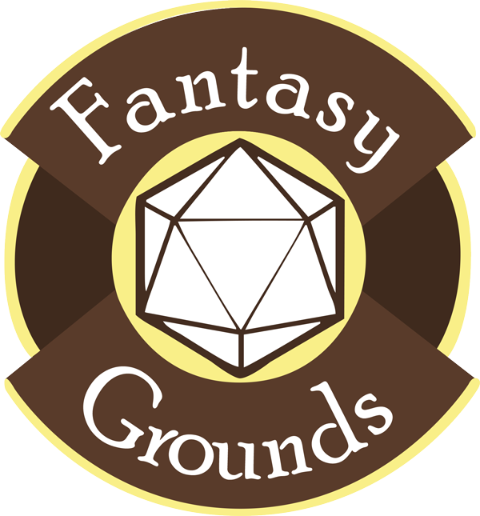

Plateformes
Roll20
Roll20 est une application web qui va vous permettre de faire vos parties de JDR en ligne et par navigateur. Il intègre tout ce qu'il faut, dans sa version gratuite, pour jouer sereinement. Noté que les options de paiement vous permette certaines choses spécifiques, comme la lumière dynamique, les SFX (effets spéciaux) ou alors la possibilité de transférer des personnages d'une partie à une autre, tout ceci est totalement facultatif et surtout, ne va concerner que des "gros joueurs" qui font beaucoup de parties via roll20.
Visiter le siteFantasy Grounds

Fantasy Grounds est un logiciel de table virtuelle de jeu de rôle très avancé, regorgeant de fonctionnalités et d’automatismes possibles. C’est l’un des trois les plus utilisés. Il fonctionne avec des rulesets, des fichiers d’extension. Le ruleset de base appelé CoreRPG fourni les fondations et fonctionnalités de base. La plupart des autres rulesets s’appuient sur CoreRPG pour fournir des fiches de personnages, des outils et une apparence adaptées au jeu qu’ils supportent. D’autres modules supplémentaires existent pour ajouter des fonctionnalités de base à la plupart des ruleset, comme une gestion de lieux, des calques aux images, une gestion des langues, etc. Tout le monde peut modifier et écrire rulesets comme modules, pour supporter leur jeu favori ou les particularités de leur campagne. Contrepartie de ses très nombreuses fonctions, il est l’un des logiciel de table virtuelle de jdr les plus complexes à prendre en main. Et cela si il y a un ruleset fonctionnel pour votre jeu favori. La modification ou la création d’un ruleset ou d’un module est très ardue, demande non seulement de solides bases en programmation mais aussi du temps et de la patience.
Visiter le siteFoundry VTT

Un nom qui évoque des balades à vélo en forêt, mais qui s’avère être un concurrent de poids dans l’offre actuel. Installable chez soi, prix fixe (ie pas d’abonnement à terme), grosse capacité de configuration et un superbe module Warhammer 4 !
visiter le siteDiscord

La logiciel de base pour communiquer par audio dans des salons de chats. De très loin le plus utilisé au monde
Visiter le site
Voici une vidéo du JDG expliquant les pros et les cons de certaines de ces plateformes